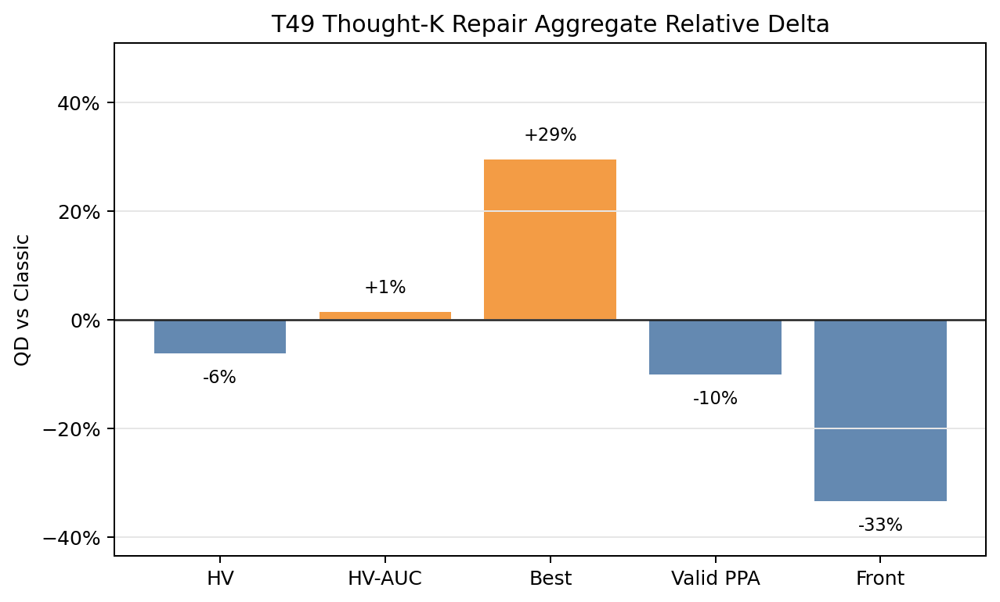
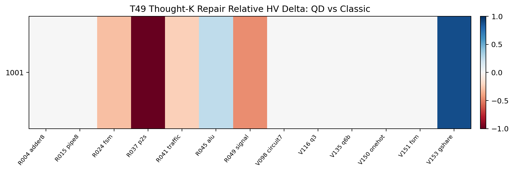
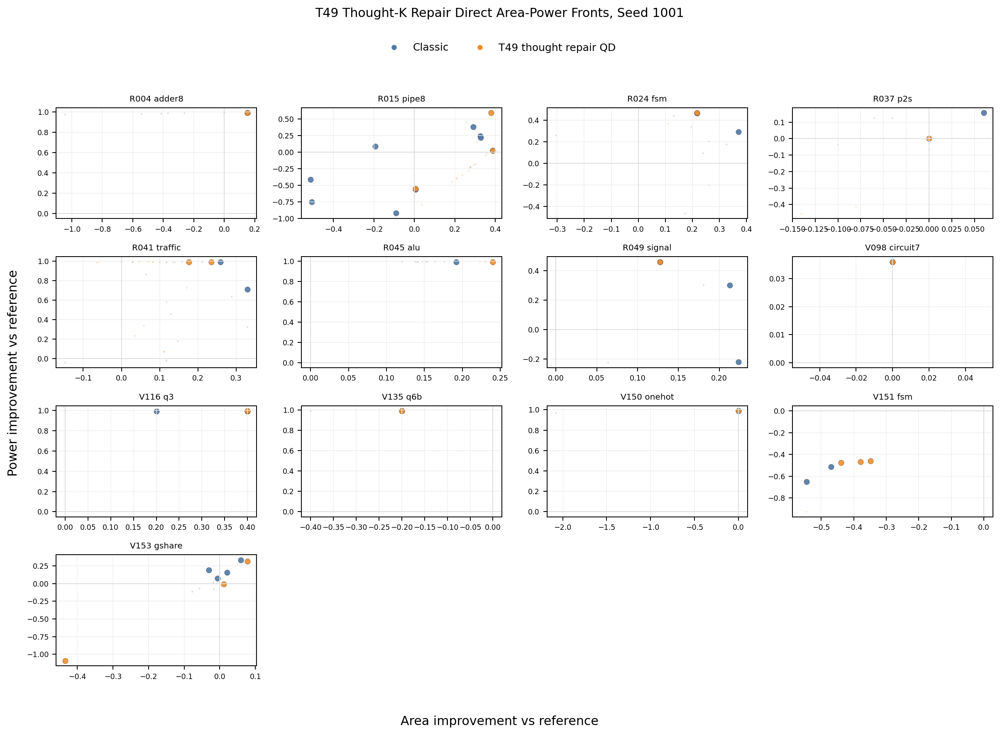
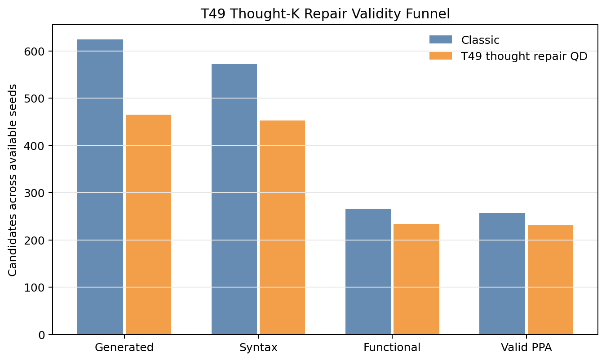
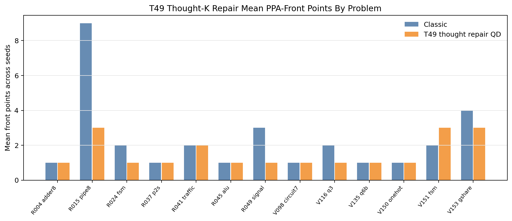

T49 Direct PPA Pareto Supplement
Static reader-facing figures for the seed 1001 hard/tuning screen. T49 is a mixed diagnostic result, not a promoted QD lead.
-6.2%Mean HV
+1.4%Mean HV-AUC
+29.5%Mean best score
-10.1%Valid PPA
-33.3%Front points
0Classic-covered losses
6Yield warnings
Aggregate Direction

Paired HV Heatmap

Direct Area-Power Fronts

Validity And Front Coverage

